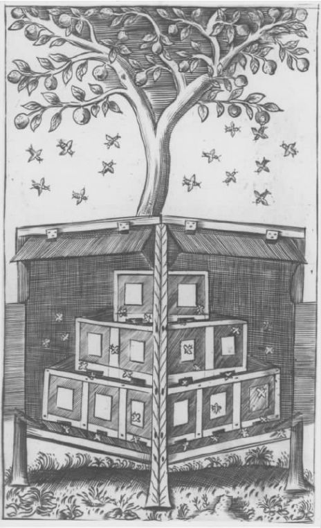

亚里士多德对世界的概括描述整个被推翻了。他的大部分解释现在看来是错误的。他使用的许多概念显得很粗糙、很不充分。他的一些思想似乎很荒谬。亚里士多德失败的主要原因很简单：在16、17世纪，科学家们使用定量研究方法来研究非生命世界，化学和物理逐渐起了主导作用。这两门学科似乎在某种程度上具有生物学所没有的基础性地位：他们研究的东西与生物学一样，但却从更严密的、数学的角度来研究——没有得到物理学和化学支持的生物学被认为是缺乏根据的。亚里士多德的物理学和化学与最近的科学家的著作相比是极不充分的。基于新科学之上的一个新“世界图景”取代了亚里士多德的观点；如果亚里士多德的生物学多存在一个世纪，它的存在只能像脱离躯干的一个肢体、巨大雕像的一块碎片一样。
亚里士多德为何没能创立一门像样的化学或一门合格的物理学呢？他的失败很大程度上要归咎于当时概念的匮乏。他当时没有我们现在所说的质量、作用力、速度（velocity）、温度，因此他缺少物理学中最有力的一些概念工具。在一些情况下，他拥有的是一种粗糙而原始的概念形式——他知道什么是速度（speed），并能够称量物体。但是，他的速度概念在某种程度上是非定量性的；他没有测量速度，也不知道公里/每小时这样的概念。或者，再比如说温度。热是亚里士多德科学中的一个核心概念。热和冷是四大基本性能中的两个，而且热对动物的生命是至关重要的。亚里士多德的前人就什么样的物体是热的、什么样的物体是冷的存在分歧。亚里士多德评论说，“如果在热和冷上存在这么多争论，我们剩下的还有什么必须思考呢？——因为这些是我们所感知到的最明显的事物”。他怀疑争论的存在是“因为‘更热’一词有几种不同用法”，于是他对我们在判断事物热度时所采用的不同标准进行了长篇的分析。分析很细致，但在我们看来却有明显的缺陷：它没有提到测量。对亚里士多德来说，热是一个度的问题，但却不是一个可测量的度。在这种程度上说，他缺乏温度概念。
概念的匮乏与技术的贫乏密切相关。亚里士多德没有精确的时钟，根本就没有什么温度计。测量装置是要和定量概念仪器一起配合使用的。没有后者，单凭前者测量是难以想象的；但没有前者，后者也毫无用处。亚里士多德缺少了一样，也就等于两样都缺少。在前面一章里我曾提出，亚里士多德的动物学研究不受他的非定量研究方法的影响。自然科学的情况就不同了：没有实验设备的化学和没有数学的物理学就是糟糕的化学、糟糕的物理学。
指责亚里士多德概念的匮乏是很荒谬的：匮乏是一种缺少，不是一种失败。但是许多研究亚里士多德的学者倾向于把方法上和实质上的两项重要失败归咎于他本人。据称，首先一点是，亚里士多德经常让论据屈服于理论，即他总是由理论开始，然后曲解论据来适应理论；第二点是，他的自然科学著作里到处可见他孩子般的决心，说要寻找自然界里的各种计划和意图。我们先看一下方法论上的指责。请看下面一段话：
这段文字节选自关于某些生成问题而展开的一段复杂而有见地的讨论。把它看做一个玩笑会是很宽容的态度；但那一点也不是玩笑：亚里士多德使自己确信，存在着与他的四大元素中三种元素相对应的各种物种；他推理说，必然存在与第四种元素相对应的物种；由于不能在地球上找到这样的物种，他就认定它们是在月球上。有比这更荒谬的吗？有比这更不科学的吗？
是的，这段文字很荒谬，并且其他地方还有一两段这样的文字。但是所有的科学家都可能会有极端愚蠢的言行：在亚里士多德著作里这样愚蠢的段落极少，明智的读者不会太在意这些。相反，他会找到很多更能代表亚里士多德思想的段落。比如，在谈论天体运动时，亚里士多德写道：
此外他还说，“如果根据论点、同时也根据与之相关的论据进行判断，蜜蜂的生殖情况就是这样。但是我们还没有获得足够的论据：如果获得了足够的论据，我们这时必然要依靠感知而非论点——依靠论点的唯一条件是它们所证明的内容与现象一致”。亚里士多德对蜜蜂的生殖情况进行了详细而周到地描述。这种描述主要基于观察之上；但也有推测的成分，在某种程度上依靠理论进行推测。亚里士多德明确地承认自己描述中的推测部分，并且明确地认为推测应屈从于观察。当已知的事实论据不足的时候理论就必不可少了；但观察永远优先于理论推测。
亚里士多德在其他地方更为概括地论述了这一点：“我们必须首先了解动物间的差异，掌握关于它们的所有事实论据。之后，我们必须努力寻找其中的原因。因为一旦关于每一种动物的研究进行完毕，那就是程序所要求的自然方法；因为那样做了，我们进行的证明所涉及的主题和所依赖的原则就会变得很明确了。”此外他还论述道：

图18“如果根据论点、同时也根据与之相关的论据进行判断，蜜蜂的生殖情况就是这样。但是我们还没有获得足够的论据……”
亚里士多德经常批评前人把理论置于事实之前。因此，他对柏拉图及其学派这样批评道：
没有比这再清楚不过的了。经验研究先于理论。事实依据要在探求原因之前收集。一个公理化演绎科学的构建（即生成证据），取决于“某个研究个案的所有真实数据”的获得。当然，亚里士多德从未掌握所有的事实；他常常在自己得到的是谬误的时候以为自己获得的是事实依据；他有时突然间就进入了理论推导状态。而且，理论应在某种程度上控制着事实数据的收集：杂乱无章的数据收集是一种非科学行为；这也许就是古代和现代的一些哲学家们所说的意思，即不存在不受理论侵蚀的纯事实。不过，尽管如此，有两点是非常清晰的：亚里士多德看得很清楚，观察是第一位的；他关于科学的主题论著——尤其是生物学著作——常常秉持这一观点。
在下一章里，我将讨论对亚里士多德的另一指责，即他天真地把自然界当做实现计划和意图的舞台。